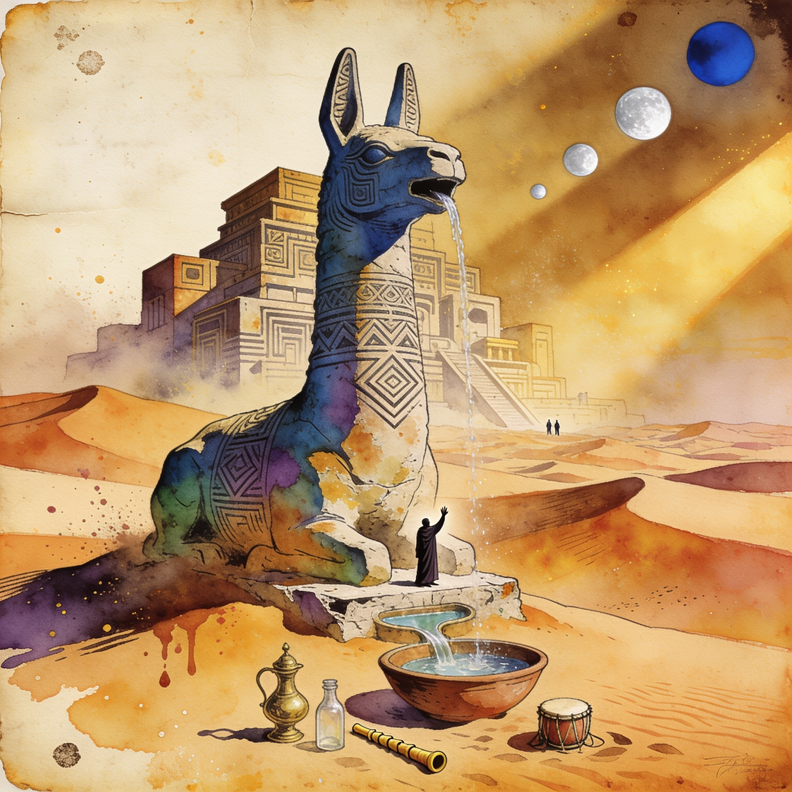

Major release
llama.cpp v0.8.0 lands with the LFM3 family, realtime audio endpoints and DeepSeek V4.1 Flash
The biggest llama.cpp release since v0.7.0 adds the full LiquidAI LFM3 family (text, vision, audio, omni) with a new streaming-audio API, plus new /v1/realtime and /tts server endpoints. New architectures include DeepSeek V4.1 Flash, SenseNova U1, Beam, Kolibri-1, Flint and Muse Spark, alongside reworked sparse attention and a 50/50 SLRU cache that keeps MoE experts host-resident. ggml is bumped to v0.28.0 to match.